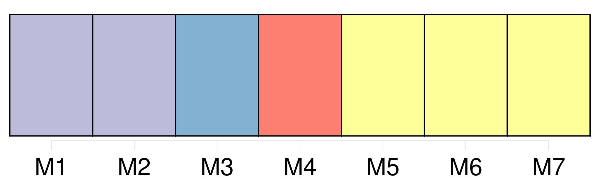
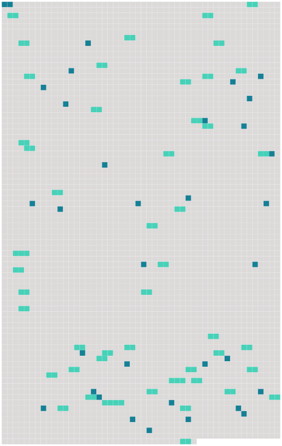

Longueur nb maillons : 83 mentions |
  |
[Zèbre] [1 phrases] [Ces animaux] se caractérisent par des bandes de rayures verticales noires et blanches. Bien que 4 la phylogénie des équidés soit peu connue, ce groupe est manifestement paraphylétique, c'est-à-dire que si tous ces animaux descendent bien d'5 une espèce commune, toutes les espèces descendantes de celle -ci ne sont pas que [des zèbres] [1 phrases]
6 Description [3 phrases]
Chez [les zèbres] , les étalons sont généralement plus grands et plus lourds que les femelles. [1 phrases]
Zébrures Grâce à 35 des méthodes de 36 reconnaissance de 37 formes, les scientifiques peuvent désormais lire les rayures caractéristiques [des zèbres] comme 39 des codes-barres pour recenser 40 une population à partir de 41 photographies. [6 phrases] 68 Une légende africaine demande si [le zèbre] est blanc à rayures noires ou noir à rayures blanches. [1 phrases]
74 Formation des rayures
77 Les spécialistes pensent généralement, en observant 78 les rayures partielles du Quagga et en tenant compte de 79 la pigmentation nécessaire [aux animaux] pour survivre sous 81 le soleil d'Afrique, que [les zèbres] étaient originellement 80 des animaux pigmentés de noir et que les raies se forment par 83 inhibition de 84 la production de 85 mélanine. Les raies noires et blanches [du zèbre] sont absentes 82 au stade fœtal initial, [ils] sont entièrement noirs. [1 phrases] Les rayures sont alors d'autant plus nombreuses que [l'animal] est gros. Elles grandissent ensuite avec [lui]
Selon 89 J. B. L. Bard, 90 les espèces de [zèbres] différeraient selon le stade embryonnaire auquel apparaissent les raies. [2 phrases] 109 Ceci conforte la théorie du Dr Debra Kay Bennett selon laquelle les espèces de [zèbres] sont, 110 chacune, plus proche d'111 une espèce de cheval que de 112 [ses] consœurs car « il suffit d’ 113 une petite modification 114 des relations temporelles des processus qui sous-tendent 115 la formation otif du motif » pour faire apparaître des rayures au lieu de taches.
106 Ce qui a donc pu se produire indépendamment au cours de l'évolution 116 des différentes espèces devenues [des zèbres] [2 phrases] 132 Au 19e siècle, 133 l'écrivain Rudyard Kipling et le naturaliste Alfred Russel Wallace ont contribué à diffuser l'hypothèse selon laquelle les rayures [du zèbre] [lui] permettaient de mieux se fondre dans la savane. [2 phrases]
En fait, dans la savane, [le zèbre] est très visible, et [il] tendrait donc à se dresser comme 139 une exception à 140 la règle du camouflage. [3 phrases] Dans 152 les années 1970, 153 des recherches ont pointé le fait que 154 la mouche tsé-tsé, responsable de aladieSommeil la maladie 156 du sommeil à aladieSommeil laquelle [les zèbres] sont plus sensibles que 155 d'autres animaux sauvages, est attirée par 157 la vue de 158 larges zones monochromes : les rayures permettraient ainsi de se protéger du parasite. Il est à 160 ce sujet significatif de constater que 164 161 les zones de 162 répartition [des zèbres] et de 163 ces glossines coïncident exactement et que les rayures s'estompent chez 165 les populations moins exposées au parasitisme par 167 les trypanosomes.
159 Des travaux publiés en 166 2012 viennent corroborer 168 cette hypothèse, en démontrant que 169 les taons sont plus attirés par 170 les monochromes, et que 171 l'effet « répulsif » des rayures est plus prononcé pour 172 des rayures semblables à celles [des zèbres] 173 Une autre hypothèse veut que les rayures contribueraient à la thermorégulation, permettant [aux zèbres] [qui] broutent pendant 122 des heures de mieux supporter 174 les fortes chaleurs de la savane africaine. [1 phrases]
185 Ce dispositif [leur] permet d'avoir 186 une température corporelle inférieure à 187 celle d'188 herbivores de 189 taille similaire paissant dans 190 les mêmes conditions ( 191 29, 2 ° C contre 192 32, 5 ° C ). [4 phrases] [Les zèbres] peuvent ainsi tenir 229 une vitesse de 30 à 40 km / h sur 230 une très longue distance ou, en 231 cas de danger, galoper à 232 60 km / h en moyenne et même faire 233 des pointes à 234 80 km / h pour semer par exemple une lionne qui court presque aussi vite, mais ne tiendra pas 235 la distance. Pour se défendre, [ils] peuvent aussi mordre et d'236 un coup de 237 sabot, briser 238 la mâchoire d'239 une lionne. [Leurs] ruades peuvent être mortelles, celles -ci sont encore plus puissantes que 240 celles d'un cheval.
[Leurs] rayures provoquent aussi 241 une sorte d'« 242 effet stroboscopique », et rendent 243 les individus difficiles à repérer lorsqu' [ils] courent en 244 groupe.
245 Systématique La taxinomie [des zèbres] est encore discutée et instable. [1 phrases]
264 Une nouvelle classification a été proposée en 266 2004 par 267 les Anglais 270 C. P. Groves et 271 H. B. Bell, d'après 272 l'observation traditionnelle 273 du pelage et 274 des crânes de [ces animaux] : • 275 Sous-genre Dolichohippus avec 276 une seule espèce : • Equus grevyi • 277 Sous-genre Hippotigris avec 278 trois espèces : • Equus quagga, avec 279 six sous-espèces : • 280 Equus quagga quagga ( éteint ) • 281 Equus quagga burchellii • 282 Equus quagga boehmi, • 283 Equus quagga borensis • 284 Equus quagga chapmani • 285 Equus quagga crawshayi • Equus zebra • 287 Equus hartmannae [3 phrases] Il comprend 296 deux sous-espèces, en 297 danger d'298 extinction ; • • Le zèbre de Grévy ( Equus grevyi ) est le plus grand de [tous les zèbres] [4 phrases] ammifere Il serait à 309 l'origine de tous les équidés ( cheval, 318 poney, âne, [zèbre] ). [Les zèbres] sont, probablement, 316 les plus anciens représentants du genre Equus. Auparavant, [ils] ont dû vivre en Amérique. [Le zèbre] faisait également 317 partie de la famille 320 des périssodactyles, tels que 323 321 les rhinocéros ou 322 les tapirs. [5 phrases]
De 342 nos jours, il est presque impossible de distinguer le crâne d' [un zèbre] de 343 celui d'un cheval, mais nous pouvons penser que les équidés qui colonisèrent les savanes tropicales devinrent [des zèbres] , laissant 344 les déserts arides aux ânes sauvages et 346 les zones tempérées de 347 l'hémisphère Nord aux chevaux sauvages. [3 phrases]
356 L'évolution de 357 nombreuses espèces d'équidés est mal connue, mais on sait qu'il existait encore 360 des ânes sauvages et [des zèbres] en Europe à 358 la fin de 359 la dernière période glaciaire de 361 l’ ère quaternaire. [5 phrases] En 396 juin 2015, 397 la nature biologique précise de [l'animal] reste incertaine. [1 phrases] Le petit [du zèbre] s'appelle le zébreau et la femelle [du zèbre] s'appelle la zébrelle. [1 phrases]
On dit que [le zèbre] hennit comme le cheval mais le zèbre de Grévy brait, comme l'âne, on dit aussi qu' [il] jappe.
409 [Les zèbres] et l'homme Vivant dans 413 un milieu comprenant de 415 grands prédateurs tels que le lion, le guépard et la hyène, [le zèbre] a développé 416 de puissantes techniques de 417 défense. D'après l'universitaire Carol Hall, « le fait qu’ [il] soit 421 un « aliment pour lion » l’ a peut-être rendu moins attrayant 418 aux yeux 419 des premiers humains ». Les tentatives de domestication s'expliquent par 410 [sa] résistance 411 au climat chaud, 420 aux maladies africaines et de 422 [sa] rapidité supérieure à 423 celle 424 du cheval rustique.
En 425 Afrique du Sud, les Boers ont essayé 426 plusieurs fois de harnacher [des zèbres] mais ont vu 427 la plupart de 428 leurs tentatives déjouées par 429 la nature sauvage et têtue de [l’ animal]
430 Hybrides
Le zébrule est le croisement d' [un zèbre] et d'431 une jument. [1 phrases]
Il s'agit d'436 un élevage sélectif du Zèbre des plaines ( Equus Quagga ) dans 437 le but de retrouver 438 l'apparence de 439 l'animal disparu après avoir découvert 440 la grande similitude de 441 l'ADN 442 des spécimens disparus avec 443 celui [des zèbres modernes]
[Les zèbres] dans 444 la culture [1 phrases]
458 Idiotismes animaliers : 459 un drôle de [zèbre] est 461 un individu douteux et 462 filer comme [un zèbre] veut dire courir très vite.
463 Proverbes [Le zèbre] est aussi 476 un symbole 477 du métissage et de 479 l'harmonie entre 480 les races.
Ainsi, [le zèbre] est 481 le symbole animal du Botswana : [ses] rayures noires et blanches ornent 483 le drapeau depuis 484 1996 et 485 deux zèbres affrontés encadrent 486 les armoiries du pays. [1 phrases]
En 487 Angola, 489 des crinières de [zèbres] sont portées lors de 490 danses rituelles ayant lieu pour 491 les cérémonies d'492 initiation 493 des jeunes lors 494 des rites de « 495 transformation ».
[Zèbres] dans 497 445 l'art et 496 la fiction • • Drôles de zèbres est 508 un film de 507 Guy Lux de 509 1977 où un patron d'510 hôtel savant fou à 511 ses heures veut transformer un cheval de course en 513 crack en lui injectant notamment 512 du sang de [zèbre] [3 phrases] • • 530 528 Le film et 529 le manga Zebraman racontent 531 l'histoire d'un super-héros dont 535 532 le costume et 533 les pouvoirs ( 534 une « super-ruade » ) sont inspirés [du zèbre] |
 |
La ressource peut être téléchargée sur la page Ortolang
Si vous avez des questions ou vous voyez des erreurs, merci d'envoyer un mail à silvia.federzoni89@gmail.com
Site développé par S. Federzoni (contact)